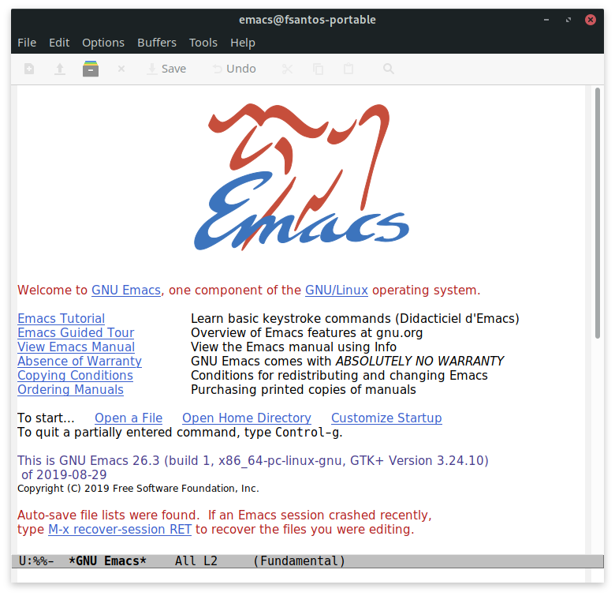
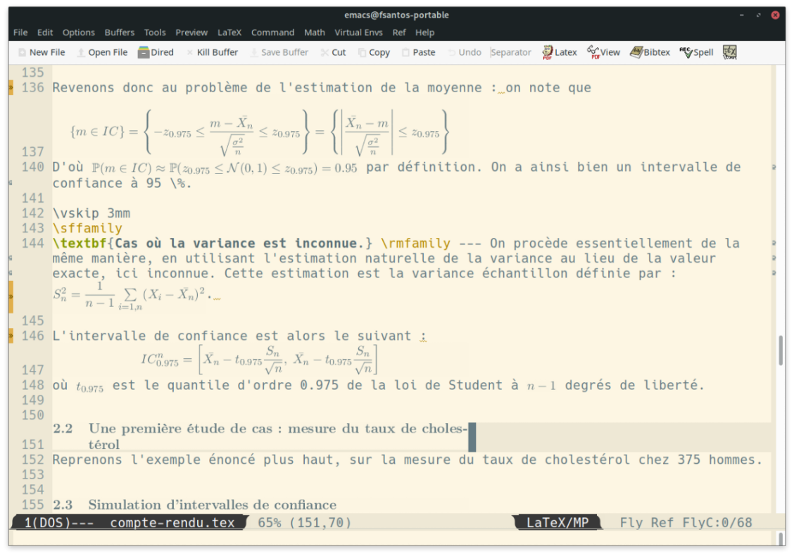
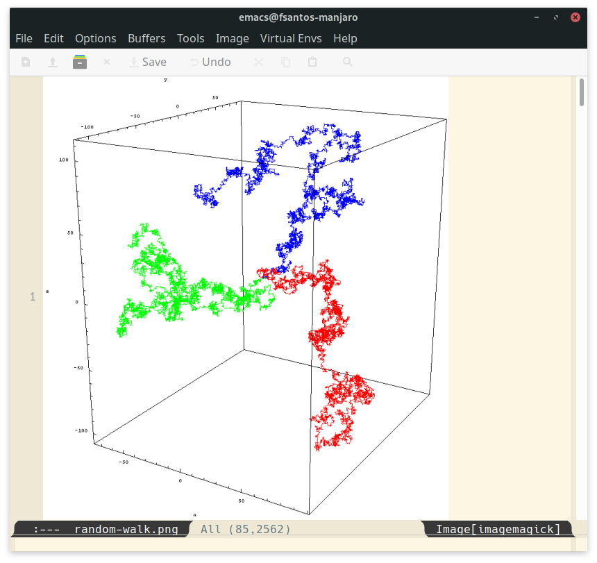
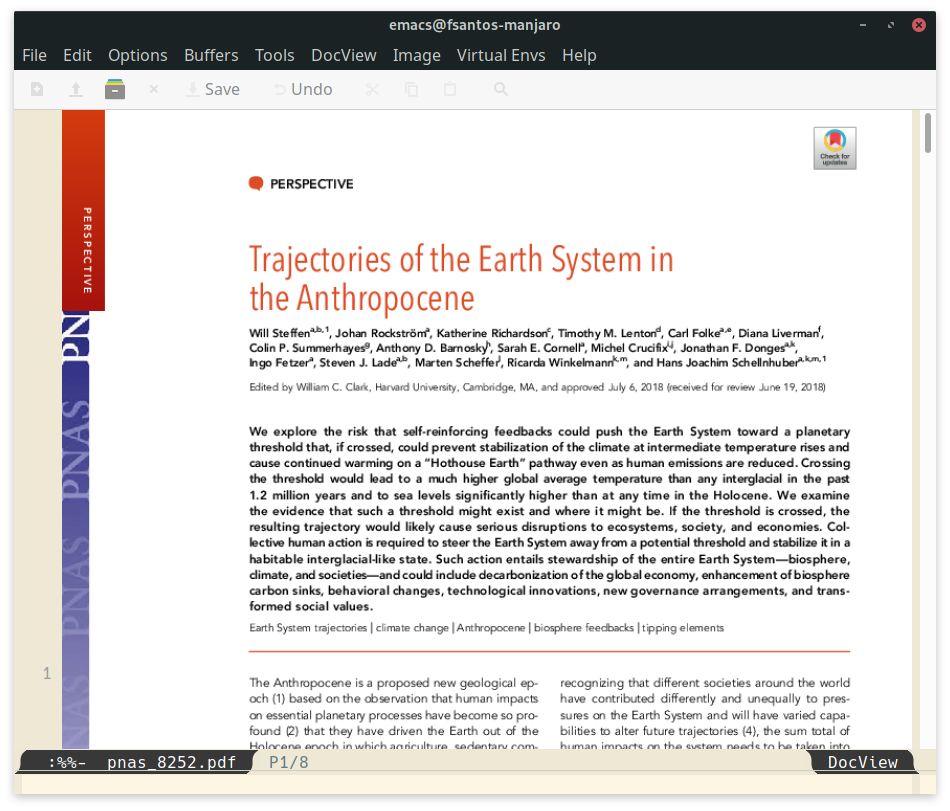
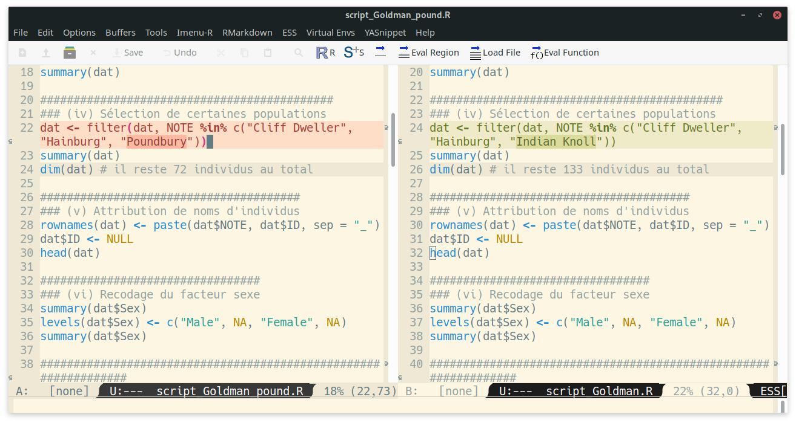

Une introduction à Emacs et Org mode
Frédéric Santos
frederic.santos@u-bordeaux.fr
Lundi 3 mai 2021
Organisation du meetup
Programme
- (Re)découverte d’Emacs
- Généralités sur Org mode
- Démo : rédiger un document Org et l’exporter en de multiples formats
- Démo : un exemple simple d’utilisation d’Org mode comme “planificateur du quotidien”
Approche
- Approche principale : Org mode comme langage de balisage léger, et système d’export universel
- Approche secondaire : Org mode comme système GTD
Interactivité
- Le meetup sera suivi d’une session de questions / réponses
- Les questions peuvent être posées dans le chat à tout moment
Et la suite ?
L’Urfist Bordeaux organisera durant l’année 2021/2022 deux formations sur Org mode :
- Utiliser Org-mode pour s’organiser, prendre des notes, rédiger des articles scientifiques.
- Prise des notes académiques : introduction à la méthode Zettelkasten avec Org-Roam.
1 Emacs

1.1 Pourquoi travailler en texte brut ?
- Portable
- Durable
- Aisé à versionner (git, svn)
1.2 Historique
- Développé dans les années 1980 par Richard Stallman à partir du logiciel propriétaire Gosling Emacs
- Logiciel libre, disponible pour tous les OS
- Codé en langages C et Emacs Lisp
- Est actuellement dans sa version 27.2
1.3 Philosophie emacsienne
Idée phare : rendre l’utilisateur totalement maître de son environnement de travail.
À cette fin, Emacs se décrit comme “extensible, customizable and self-documenting” :
- Extensible : offre le langage Emacs Lisp comme langage d’extension. Il existe aujourd’hui plus de 5200 extensions Emacs sur le dépôt Melpa, offrant des fonctionnalités supplémentaires.
- Personnalisable : très puissamment personnalisable via un fichier d’initialisation où l’on peut redéfinir n’importe quel paramètre ou variable du logiciel, et ajouter de nouveaux comportements. Deux utilisateurs d’Emacs n’auront jamais le même Emacs.
- Documenté : tutoriel, nombreux manuels très touffus, communauté d’utilisateurs sur Stackoverflow, aide intégrée dans le logiciel.
1.4 Aperçu des fonctionnalités

1.4.1 Éditeur de texte brut

(Noter la présence d’un correcteur orthographique.)
1.4.2 Éditeur LaTeX
AUCTeX : un mode LaTeX très performant (avec prévisualisation WYSIWYG).

1.4.3 Éditeur de langages de balisage
- Des modes HTML et CSS
- Un mode markdown

1.4.4 Visionneuse d’images

1.4.5 Visionneuse PDF

1.4.6 Éditeur de script
Ici, un exemple de script bash :

1.4.7 Emacs en tant qu’EDI
Un exemple de configuration d’Emacs en tant qu’EDI pour le langage R :

1.4.8 Versionnement
- Offre un mode de versionnement natif (prise en charge de Git ou SVN)
- Un package additionnel, Magit, offre le meilleur client Git actuel
- Comparaison aisée des versions avec
ediff

1.4.9 Gestionnaire de fichiers

1.4.10 Client mail et fonctionnalités web

Emacs inclut aussi un navigateur web basique (en mode texte), un client IRC, …
1.4.11 Psychothérapeute
Emacs a un mode doctor intégré pour une psychothérapie en mode texte.

1.5 Mais alors, Emacs peut tout faire ?
Ben oui.
(Un utilisateur avancé d’Emacs aura tendance à “vivre dans Emacs” et à réaliser la quasi-totalité de ses tâches informatiques directement dans ce logiciel.)
2 Org mode

2.1 Un mode d’Emacs pour “organiser sa vie en texte brut”
- Clairement l’une des fonctionnalités phares d’Emacs.
- Créé par Carsten Dominik en 2003, initialement comme un système avancé de prise de notes et de classement de l’information.
- Org mode a ensuite été considérablement étendu pour inclure un agenda, un gestionnaire de tâches, un chronométrage des tâches, …
- C’est aujourd’hui un système compatible GTD.

2.2 Un moteur d’export universel
- Org mode est aussi un langage de balisage léger, similaire à (mais plus avancé que) Markdown.
- Dispose de fonctionnalités avancées d’export vers de nombreux formats (html, odt, pdf/tex, pdf/beamer, reveal.js, …) grâce à son moteur natif d’export (pas besoin de
pandoc).
3 Org-babel
- Étend Org mode en système de programmation lettrée.
- Gère plus de 50 langages (Bash, C/C++, Matlab, Octave, Perl, Python, R, …).
- Permet de passer des variables aisément d’un langage à l’autre.
- Permet de combiner une interface de type notebook avec toutes les fonctions GTD proposées par Org-mode.